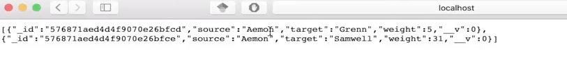
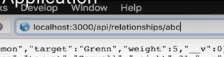

So, in the previous page we have explained briefly what the database file looks like and how it works, and what this function down here actually executes, and that it only executes once we are really connected to the database and we are able to query the database.
And in this section, we're going to see what the router is, what the controller is and what the models are. And we are going to implement a new route into our application. So, first of all, let's again go and start the application. We can do this again, as I showed it in a previous video, through the terminal emulator from our computer or you can do it from the terminal here. My preferred way is actually to just click on the NPM tab and then press on the start script and you will see down here that this is the same output that you get if you run this on a terminal.

Or,
So, our application is running and this are the relationships that I get back from our application.
So, back here and our application is running. This code is loaded into a process and let's actually see what these lines of code now do.
Now, we want to look at, is this one. We define our application, so our app to be an express application and later we set some some variables and we add some components to it. One of the variables that we want to assign is the port number on which our application is going to be listening and we have seen, I'm going to switch back to Safari right now, that we are listening on port 3000 here. So, this is exactly what we are telling here that if there is no PORT specified in the environment variables, then by default it will fall back and that's what the or or stands for here. The default fall back is the port 3000. This is also an important bit to talk about one second and it's the environment variables , because here we can specify some variables, for example, the port number that might differ when we're executing our code on our production servers, for example. So, it's always good practice to have this variable, like, for example, the port number or the database connection string to be environment variable friendly or to pull back on some default values.
And next thing that we're going to talk about is the router and we see that here we create a router and we create router by requiring a file. I have already explained earlier that we can omit the extension here. So, when we are requiring this file, we're actually requiring the file that is called router.js, because we see it here, it's router.js. And since it's good practice, let's go ahead and look what is actually contained in our files.
So, we fire up router.js and we see, this file is very short, it starts with two requirements, well sorry, just one requirement and one assignment. We require express again here on top and then we define our router, which is a new express router. That's what we do in this line here. And then we can assign some routes to it. For example, get requests or we can also assign post requests, put request, delete requests. These are the requests that I talked about in my video lectures. But before that, let's see here, we are actually requiring something else and we call it the relationships controller and this file is actually located somewhere, not right at the root of our application. It's located in the folder app, that we see here on top, so let's expand that. Then we go into controllers and then we are requiring relationships, which is this file over here. So, let's double click on that and open it up
first of all, that we are requiring something else. It's again the file and now the two dots tell us that we have to look one folder before the folder we are in. So, we are in controllers and we need to look at app and then we want to look at models. So, we open up the models and then there should be a file, which is called relationships. And, in fact, there is and we're going to open up that.
And now here, we actually see an entire code - that there is no requirement of other files within our file tree. So, we can start reading this file and from here work backwards and see how a router and power application works. So, let's get started on that and the first line again - we require mongoose and that's because we want to create a model, which is the relationships model, that is a mongoose model, and we call this model relationships. And it has some fields that we want to specify that our model has to adhere to. So, specifically, we want our objects inside the relationships database to have a source, to have a target and to have a weight. The source is of type string, the target is also of type string, while the weight is of type number, which might mean - now we can store integer numbers or double or float numbers . All of the three fields are required. So, we cannot insert elements into our database, which do not adhere to the standard, to say so. All of the objects need to have a field, which is source of that string, a field which is target of type string and a weight of type number. The last line is the module exports. This we have seen before. This is what happens when we actually require this specific file. And what we're exporting here is exactly the model. So, the model that we defined over here is what we are exporting down here.
Going back to our controllers, we see that we are requiring the relationships model. So, inside the relationships controller, in module.exports we have an object and this object has an attribute, which is called relationships and this attribute actually executes a function, which accepts two parameters: the first one being the request and the second one being the response. These are two parameters, which are passed as a confirmation to express are necessary for dealing with requests. So, when you have an incoming request, there are some attributes, which you can read. For example, where does the request come from, from which IP address, who is the user, which browser is the user using; the user can be using Safari, Chrome, Firefox or something else. And then, the next one is response and this is actually what we are going to answer back to the user that performed the request.
So, let's go into the function. What we do here is to use the relationships model defined in /models/relationships.js, to perform a find. We want to find the objects inside the model and we do not just want to find a specific object, we want to find all objects. So, we're not specifying anything more. We're just saying from our relationships model: I want to find everything and once the relationship model returns all of the objects that it contains, we want to execute a certain callback function, which accepts error and results. This is the type of callback function returned from the defined operation and if there is no error in finding the objects inside the database, then I want to return a response, which contains our results and of status 200, which in HTTP means it was a successful request and I'm returning some results or I'm returning what you expect me to return. On the other hand, if there was an error, so, if there is an error, what I want to return is a response with the status of 500, which again in HTTP means there has been an error on the server side and I want to send my error back to the user, so that the user knows of what kind of problem might have happened. So, now, we have seen what calling this relationships function actually does. It will answer to a certain request with a response that is either an error or a successful response, and it will return the results of finding all of the objects in our relationships model.
So, we go back to the router where we actually require our relationships controller. And, as I said before, in the router we can specify requests that we want to be available from a router. So, for example, here, we specify that if an incoming request is a GET request and it matches this URL, then we perform the function from the relationships controller, which is called relationships, which is the function that we have just seen. We can also change the GET to, for example, POST. And this would then be a POST request or or a PUT request, or a DELETE request. And this obviously depends on what you actually want to do. But, in our specific case, what we want is we want to get data. So, we want to specify a GET request and the difference between GET, PUT, POST and DELETE requests I have explained in my video lectures.
So, if we navigate to these API relationships, we're executing this function and you might have noticed that at the end, we're actually not calling the function. So, we're not making one specific call of the function but what we're asking for is the blueprint of the function. We're specifying what needs to be called if a user is trying to open up this route and this is because when this code gets executed for the first time, if we had something like this here, we would actually execute the function at on that moment. So, say, today I start my server. This code gets executed after I start my server. It performs this request and this will be stored, and then every time someone calls this call, the same object will always be returned. So, the same array of relationships will always be returned. But obviously, in our database the data might change over time. So, what we want is that every time a user is calling this request, we don't want the application to just return the same result every time the code is executed, but we want to execute a function on the spot at the moment and for that user and we want to answer to that user exactly the data that we get back from the database at that specific point in time.
The last thing we see is that we are exporting again because this is necessary for the other files requiring this file to know what would we actually want to achieve by requiring this file. And what I'm exporting here is exactly the router object, which is the one that we have defined over here and to which we have assigned a route. I get requests over here.
Now, we can go back to
index.js where we actually require the router and we assign it to the variable router. The router will be listening
on the root. If an incoming request gets on the root and it matches one of the routers specified incoming requests, for
example,
/api/relationships, then, you have to answer calling the function
relationshipControllers.relationships.
The last part of the code in index.js what it does is actually start listening. This is the most important part, this is really where we say now we have loaded all of our controllers, we have loaded all of our roots, we have executed all of our logic that we need to bootstrap our application and now we actually want to start listening to incoming requests. And the way we do that is, basically, we say: we start listening on a port that has been specified before and then once the server is actually listening, we execute a callback function and we print on the log that the express server is listening on the port that we have specified and the application is running, and we should be able to connect to localhost + port number + /api/relationships and we should be able to get back the data that we see here.
We start by implementing a new route. So, we know that the routes are defined into the router. So, we don't have to modify index.js, but we have to modify the router.
So, we can come up with any name that we want. I'm going to delete the semicolon at the end of this line. I'm going to copy paste this line one line below. It's another get request, because we're getting data and we want to get the relationships for the character Aemon and we obviously change the type of the function that we're going to call. So, we want the relationships only for Aemon and we also have to add the semicolon here, because I deleted it from here before.
What you can actually immediately notice is that the color of these two blueprints of functions are different and this is because the editor automatically knows that in the file controllers/relationships.js there is no key that has the name relationshipsAemon that we have defined. So, if I hover over it, it actually tells me there is an unresolved variable relationship Aemon. It doesn't happen here, because this is obviously defined. So, what we have to do now is actually to define this function over in the controller.
So, what we'll do is, I am copying and pasting the name of the function, just out of simplicity, then I navigate to controllers/relationships.js, I append at the end here a comma, then I specify the new function that I want to implement, a colon and I, basically, can copy what is written above here.
I say function, then I put request and response and automatically the editor has already put the parentheses for me. Just to be consistent with the way I have written them over here, I will delete some of the spaces and then what we want to do here is we want to find in our relationships model only those objects, which have as a source Aemon. So, we can copy what is over here, because this is actually good code and there is no reason why not to reuse it. So, we can just copy what we have over there and if we look at the documentation of mongoose, we will see that in the find function of a model, we can specify as the first parameter an object. So, let's put an object in and then we put a comma, and we leave the callback as it is. And in this object, I'm going to now return just to have more space here, in this object we can specify what filters to apply on our data before we get it out. So, the filters we want to apply, as we said before, are that the source must equal Aemon. So, this is all we have to do now to be sure that when we perform the find operation on our relationships model, we only filter out those elements of which the source is Aemon. The rest, as I said before, the callback is actually working pretty well, because we will have a very similar result of what we have above here. If we have an error, then we just return there was some kind of an error. So, this is the error. And if there was no error, we will have some results, which are most likely and hopefully going to be those elements in which the source is Aemon and we will return this element to the user.
So, there is no need for me to change the model, because the model is the same. There's no difference there, the only thing again that I'm changing here is just I'm filtering out the relationships, such that what I get is that the source of our relationships is Aemon. Now I have saved this file, I have saved this file, there is no modification here, so there's no need to save anything here. If I go back to my run tab here, I can restart the process and this is needed, because, as I just mentioned, we have modified files here and when we start the process here, what actually happens inside your PC or inside your Mac or Linux machine is that the files that you have here, they are being collected inside the process and the process contains a copy of the files. So, since the copy is outdated, I need to restart my server and I can do that by pressing this button. If I was using the terminal, you would have to press control+C and then you can just type in NPM start again. So, just for the sake here, I press run again and the output is going to be the same, because I'm not logging anything new. But when I go to Safari now and I have my API relationships root, if I now append Aemon, as you see here, what I will get is a new array.
And this is the array of objects with only two objects and the two objects that I get are with the source Aemon. These are the only two objects that I have in my database, which have this source.
So, we were successful in implementing this route and we can also confirm that by going back, looking at our complete relationships root with all of our relationships data and you will see that at the very top there's only two objects, which are of a source Aemon and they are exactly the same ones that we get if we navigate back to this root. So, yes, this is exactly what I wanted to show you. You have seen that it's actually really really easy to implement a new root. Probably, you want to do this in a more systematic and a more a reusable way. So, instead of defining really specific names for characters, since we're dealing with a database and names might change, you can define a variable here.
So, basically I can say column name, source name, is even better. Source name. And this way I can use this variable later inside my relationships controller to just filter out those sources, sorry, those objects of which the source is the name that I specify here. So, for example, I might write ABC here
and then the value that sourceName will hold is ABC.
So, somewhere in the controllers over here, I can instead of hard-coding in the name, I can use something like - sourcename.
There is more to that, it's actually not that easy. You have to define a couple of things here and there, but it this is just to give an idea of how to make this code more reusable. This is all. Dennis is going to talk to you about the visual part of our application. In his example application, there will be also views defined inside of the code, which I am missing in this code, simply because out of simplicity. This is just an API. In the views part, even if you navigate to index.js, there will be some new lines of code, which you should look into. They are interesting and I'm very sure that if you understand those lines of code, you actually understand how the application works. So, that is a good test for you to try out and have fun.